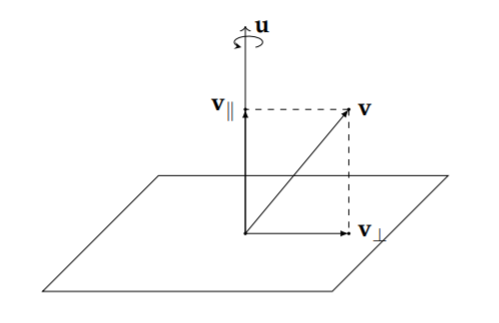
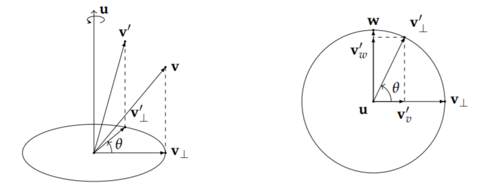
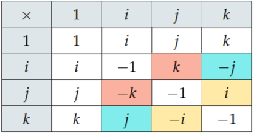

备注：本文主体内容为[https://krasjet.github.io/quaternion/quaternion.pdf] 的归纳，如有侵权，请联系本人删除。
复数
基本概念
- 复数定义为：
$$
z=a+bi\tag{1}
$$
其中，a为实部，b为虚部。$i^2=-1$
而z其实就是对于{1,i}这个基（Basis）的线性组合（Linear Combination）1
也可以用向量来表示：
$$
z=\left[\begin{array}{c}a\b\end{array} \right]\tag{2}
$$
- 复数的运算法则
- 复数加减法：略
- 复数乘法
令$z_1=a_1+b_1i,\quad z_2=a_2+b_2i$，则
$$
z_1z_2=a_1a_2-b_1b_2+(a_1b_2+a_2b_1)i\=\left[ \begin{matrix}
a_1&-b_1 \
b_1&a_1 \
\end{matrix} \right] \left[ \begin{array}{c}
a_2\
b_2\
\end{array} \right] \tag{3}
$$
左侧的$\left[ \begin{matrix}
a_1&-b_1 \
b_1&a_1 \
\end{matrix} \right] $是$z_1$的矩阵形式，在矩阵形式下，复数与复数的相乘可以表示为矩阵的相乘
$$
z_1z_2=\left[ \begin{matrix}
a_1&-b_1 \
b_1&a_1 \
\end{matrix} \right] \left[ \begin{matrix}
a_2&-b_2 \
b_2&a_2 \
\end{matrix} \right]\
=\left[ \begin{matrix}
a_1a_2-b_1b_2&-(a_1b_2+a_2b_1) \
(a_1b_2+a_2b_1)&a_1a_2-b_1b_2 \
\end{matrix} \right]\tag{4}
$$
- 复数结合律：$z_1z_2=z_2z_1$
- 模和共轭：$z\bar z=a^2+b^2=||z||^2$
复数的二维旋转
$$
\left[ \begin{array} { c c } a & - b \ b & a \end{array} \right] = \sqrt { a ^ { 2 } + b ^ { 2 } } \left[ \begin{array} { c c } \frac { a } { \sqrt { a ^ { 2 } + b ^ { 2 } } } & \frac { - b } { \sqrt { a ^ { 2 } + b ^ { 2 } } } \ \frac { b } { \sqrt { a ^ { 2 } + b ^ { 2 } } } & \frac { a } { \sqrt { a ^ { 2 } + b ^ { 2 } } } \end{array} \right]\tag{5}
$$
$$
\begin{aligned} \left[ \begin{array} { c c } a & - b \ b & a \end{array} \right] & = \sqrt { a ^ { 2 } + b ^ { 2 } } \left[ \begin{array} { c c } \cos ( \theta ) & - \sin ( \theta ) \ \sin ( \theta ) & \cos ( \theta ) \end{array} \right] \ & = | z | \left[ \begin{array} { c c } \cos ( \theta ) & - \sin ( \theta ) \ \sin ( \theta ) & \cos ( \theta ) \end{array} \right] \ & = | z | \cdot I \left[ \begin{array} { c c } \cos ( \theta ) & - \sin ( \theta ) \ \sin ( \theta ) & \cos ( \theta ) \end{array} \right] \ & = \left[ \begin{array} { c c } | z | & 0 \ 0 & | z | \end{array} \right] \left[ \begin{array} { c c } \cos ( \theta ) & - \sin ( \theta ) \ \sin ( \theta ) & \cos ( \theta ) \end{array} \right] \end{aligned}\tag{6}
$$
- 复数的相乘其实是缩放与旋转的复合，如果有一个复数 $z = a + bi$， 那么 z 与任意一个复数 c 相乘都会将 c 逆时针旋转$\theta=atan2(b,a)$度，并将其缩放$||z||=\sqrt{a^2+b^2}$倍1
atan2是对于atan的修正，更稳定，用于计算复数的方位角2
$$
atan2 ( y , x ) = \left{ \begin{array} { l l } \arctan \left( \frac { y } { x } \right) & x > 0 \ \arctan \left( \frac { y } { x } \right) + \pi & y \geq 0 , x < 0 \ \arctan \left( \frac { y } { x } \right) - \pi & y < 0 , x < 0 \ + \frac { \pi } { 2 } & y < 0 , x = 0 , x = 0 \ - \frac { \pi } { 2 } & y = 0 , x = 0 \end{array} \right.\tag{7}
$$
- 二维旋转公式1
- 矩阵型
$$
v’=zv=\left[ \begin{matrix}
cos(\theta)&-sin(\theta) \
sin(\theta)&cos(\theta) \
\end{matrix} \right]v\tag{8}
$$
- 复数积型
$$
v’=(cos(\theta)+isin(\theta))v\tag{9}
$$
- 极坐标型
$$
v’=e^{i\theta}v\tag{10}
$$
三维空间的旋转
在实际代码的实现中，对于一个非单位长度的旋转轴向量 u，必须先转换为单位向量
$$
\hat u=\frac u{||u||}\tag{11}
$$
旋转的分解

$$
v=v_{||}+v_{\bot }\tag{12}
$$
其中，$v_{||}$是v在u上的正交投影，因此可得出
$$
\begin{align}v_{||}&=proj_u(v)\&=\frac{u\cdot v}{u\cdot u}u\&=\frac{u\cdot v}{||u||^2}u\quad(||u||^2=u\cdot u)\&=(u\cdot v)u\quad(||u||=1\end{align}\tag{13}
$$
$$
v_{\bot}=v-v_{||}=v-(u\cdot v)u\tag{14}
$$
- 对于平行分量，旋转后保持不变
- 对于垂直分量

构建一个与u，$v_{\bot}$正交的向量w，根据叉乘时判断向量的方向3：
将向量a和b首尾相连
- 如果$a\times b$呈顺时针方向，则$a\times b$远离你
- 如果$a\times b$呈逆时针方向，则$a\times b$朝向你
$$
w=u\times v_{\bot}\tag{15}
$$
$$
\begin{align}||w||&=||u\times v_{\bot}||\&=||u||\cdot||v_{\bot}||\cdot sin(\pi/2)\&=||v_{\bot}||\end{align}\tag{16}
$$
所以可求得旋转后的垂直分量$v_{\bot}’$为
$$
\begin{align}v_{\bot}’&=v_{\bot}cos(\theta)+wsin(\theta)
\&=v_{\bot}cos(\theta)+(u\times v_{\bot})sin(\theta)\end{align}\tag{17}
$$
又
$$
\begin{align}u\times v_{\bot}&=u\times(v-v_{||})
\&=u\times v-u\times v_{||}\&=u\times v\end{align}\tag{18}
$$
综上所述，在三维空间中，矢量v沿矢量u旋转$\theta$角后所得的矢量$v’$为
$$
\begin{align}v’&=(u\cdot v)u+v_{\bot}cos(\theta)+(u\times v_{\bot})sin(\theta)\&=(u\cdot v)u+(v-(u\cdot v)u)cos(\theta)+(u\times v)sin(\theta)\&=cos(\theta)v+(1-cos(\theta))(u\cdot v)u+sin(\theta)(u\times v)\end{align}\tag{19}
$$
四元数
- 定义：四元数有一个实部和三个虚部，可以写成如下形式
$$
q=a+bi+cj+dk\quad(a,b,c,d\in R)\tag{20}
$$
$i^2=j^2=k^2=ijk=-1$
- 四元数其实就是对基**{1,i,j,k}**的线性组合，四元数也可以写成向量的形式
$$
q=\left[ \begin{array}{c}
a\
b\
c\
d\
\end{array} \right]
\\tag{21}
$$
- 此外，也经常将四元数的实部和虚部分开，并用一个三维的向量将它表示为标量和向量的有序对形式
$$
q=[s,v]\quad (v=\left[ \begin{array}{c}
x\
y\
z\
\end{array} \right] ,s,x,y,z\in R)\tag{22}
$$
性质
模长（范数）
$$
\begin{align}||q||&=\sqrt{a^2+b^2+c^2+d^2}\&=\sqrt{s^2+||v||^2}\&=\sqrt{s^2+v\cdot v}\end{align}\tag{23}
$$
四元数加减法
$$
q_1\pm q_2=[s\pm t,\boldsymbol v\pm \boldsymbol u]\tag{24}
$$
标量乘法
四元数$q=a+bi+cj+dk$和一个标量s，他们的乘积为
$$
sq=s(a+bi+cj+dk)=sa+sbi+scj+sdk\tag{25}
$$
四元数乘法
- 左乘和右乘
- 左乘：$q_1q_2$（$q_2$左乘以$q_1$）
- 右乘：$q_2q_1$（$q_2$右乘以$q_1$）
- 对于四元数$q_1=a+bi+cj+dk$和$q_2=e+fi+gj+hk$
$$
\begin{aligned} q _ { 1 } q _ { 2 } = & ( a + b i + c j + d k ) ( e + f i + g j + h k ) \ = & a e + a f i + a g j + a h k + \ & b e i + b f i ^ { 2 } + b g i j + b h i k + \ & c e j + c f j i + c g j ^ { 2 } + c h j k + \ & d e k + d f k i + d g k j + d h k ^ { 2 } \end{aligned}\tag{26}
$$

$ij=k,ji=-k$
通过上述表格，式(26可被化简为)
$$
\begin{aligned}q_1q_2 = & ( a e - b f - c g - d h ) + \ & ( b e + a f - d g + c h ) i \ & ( c e + d f + a g - b h ) j \ & ( d e - c f + b g + a h ) k \end{aligned}\tag{27}
$$
矩阵形式
- $q_2$左乘以$q_1$
$$
q_1q_2=\left[ \begin{matrix}
a& -b& -c& -d\
b& a& -d& c\
c& d& a& -b\
d& -c& b& a\
\end{matrix} \right] \left[ \begin{array}{c}
e\
f\
g\
h\
\end{array} \right] \tag{28}
$$
- $q_2$右乘以$q_1$
$$
q_2q_1=\left[ \begin{matrix}
a& -b& -c& -d\
b& a& d& -c\
c& -d& a& b\
d& c& -b& a\
\end{matrix} \right] \left[ \begin{array}{c}
e\
f\
g\
h\
\end{array} \right] \tag{29}
$$
Graßmann 积
令$v=\left[ \begin{array}{c}
b\
c\
d\
\end{array} \right] ,u=\left[ \begin{array}{c}
f\
g\
h\
\end{array} \right] $
$$
q_1q_2=[ae-\boldsymbol v\cdot \boldsymbol u,a\boldsymbol u+e\boldsymbol v+\boldsymbol v\times \boldsymbol u]\tag{30}
$$
对于$q_1=[s,\boldsymbol v], q_2=[t,\boldsymbol u]$
$$
q_1q_2=[st-\boldsymbol v\cdot \boldsymbol u,s\boldsymbol u+t\boldsymbol v+\boldsymbol v\times \boldsymbol u]\tag{31}
$$
这就是Graßmann积
纯四元数
$$
v=[0,\boldsymbol v]\tag{32}
$$
纯四元数特性：如果有两个纯四元数$v=[0,\boldsymbol v],u=[0,\boldsymbol u]$
$$
\begin{aligned} v u & = [ 0 - \mathbf { v } \cdot \mathbf { u } , 0 + \mathbf { v } \times \mathbf { u } ] \ & = [ - \mathbf { v } \cdot \mathbf { u } , \mathbf { v } \times \mathbf { u } ] \end{aligned}\tag{33}
$$
逆和共轭
- 通常将乘法的逆运算定义为$pq^{-1}$或者$q^{-1}p$
$$
qq^{-1}=q^{-1}q=1\quad(q\ne 0)\tag{34}
$$
- 定义一个四元数$q=a+bi+ck+dj$的共轭为$q^*=a-bi-ck-dj$，共轭四元数的一个特别的性质为：
$$
\begin{aligned} q q ^ { * } & = [ s , \mathbf { v } ] \cdot [ s , - \mathbf { v } ] \ & = \left[ s ^ { 2 } - \mathbf { v } \cdot ( - \mathbf { v } ) , s ( - \mathbf { v } ) + s \mathbf { v } + \mathbf { v } \times ( - \mathbf { v } ) \right] \ & = \left[ s ^ { 2 } + \mathbf { v } \cdot \mathbf { v } , \mathbf { 0 } \right]\&=||q||^2 \&=q^*q\end{aligned}\tag{35}
$$
所以可得到四元数的逆
$$
q^{-1}=\frac{q^*}{||q||^2}\tag{36}
$$
- 单位四元数
$$
q^{-1}=\frac{q^}{1^2}=q^\tag{37}
$$
四元数和三维旋转
参考三维空间的旋转章节，将下列向量定义为纯四元数
之后的纯四元数均不加粗
$$
\begin{aligned} v & = [ 0 , \mathbf { v } ] & v ^ { \prime } & = \left[ 0 , \mathbf { v } ^ { \prime } \right] \ v _ { \perp } & = \left[ 0 , \mathbf { v } _ { \perp } \right] & v _ { \perp } ^ { \prime } & = \left[ 0 , \mathbf { v } _ { \perp } ^ { \prime } \right] \ v _ { | } & = \left[ 0 , \mathbf { v } _ { | } \right] & & v _ { | } ^ { \prime } & = \left[ 0 , \mathbf { v } _ { | } ^ { \prime } \right] \ u & = [ 0 , \mathbf { u } ] & & \end{aligned}\tag{38}
$$
$v_{\bot}$的旋转
根据（17）
$$
\begin{align}v_{\bot}’&=v_{\bot}cos(\theta)+wsin(\theta)
\&=v_{\bot}cos(\theta)+(u\times v_{\bot})sin(\theta)\end{align}\tag{17}
$$
利用纯四元数的性质，可得到
$$
\begin{align}uv_{\bot}&=[0,\mathbf u\times \mathbf v_{\bot}]\&=\mathbf u\times \mathbf v_{\bot}\end{align}\tag{39}
$$
代入，得
$$
v’{\bot}=cos(\theta)v{\bot}+sin(\theta)(uv_{\bot})
=(cos(\theta)+sin(\theta)u)v_{\bot}\tag{40}
$$
令$q=cos(\theta)+sin(\theta)u$，此时可得到
$$
v_{\bot}’=qv_{\bot}\tag{41}
$$
对q继续变形
$$
\begin{aligned} q & = \cos ( \theta ) + \sin ( \theta ) u \ & = [ \cos ( \theta ) , 0 ] + [ 0 , \sin ( \theta ) \mathbf { u } \ & = [ \cos ( \theta ) , \sin ( \theta ) \mathbf { u } ] \end{aligned}\tag{42}
$$
如果旋转轴u的坐标为$\left[ \begin{array}{c}
u_x\
u_y\
u_z\
\end{array} \right] $，旋转角为$\theta$，那么
$$
q=cos(\theta)+sin(\theta)u_xi+sin(\theta)u_yj+sin(\theta)u_zk\tag{43}
$$
q为单位四元数$||q||=1$
$v_{||}$的旋转
$$
v_{||}’=v_{||}\tag{44}
$$
$v$的旋转
$$
v’=v_{||}+qv_{\bot}\tag{45}
$$
==引理1：如果$q=[cos(\theta),sin(\theta)\mathbf u]$，而且u为单位向量，那么$q^2=qq=[cos(2\theta),sin(2\theta)\mathbf u]$==
对（45）进行变形得
$$
\begin{align}v’&=v_{||}+q v_{\bot}\&=1\cdot v_{||}+qv_{\bot}\&=pp^{-1}v_{||}+ppv_{\bot}\&=pp^{*}v_{||}+ppv_{\bot}\end{align}\tag{46}
$$
令$q=p^2$，则$p=[cos(\frac 12\theta),sin(\frac 12\theta)\mathbf u]$
==引理2：假设$v_{||}=[0,\mathbf v_{||}]$是一个纯四元数，而$q=[\alpha,\beta \mathbf u]$，其中$\mathbf u$是一个单位向量，$\alpha,\beta \in R$，在这种条件下，如果$\mathbf v_{||}$平行于$\mathbf u$，那么$qv_{||}=v_{||}q$==
==引理3：假设$v_\bot=[0,\mathbf v_\bot]$是一个纯四元数，而$q=[\alpha,\beta\mathbf u]$，其中$\mathbf u$是一个单位向量，$\alpha,\beta\in R$。在这种条件下，如果$\mathbf v_\bot$正交于u，那么$qv_{\bot}=v_\bot q^*$==
所以，对公式（46）做最后的变形得
$$
\begin{aligned} v ^ { \prime } & = p p ^ { * } v _ { | } + p p v _ { \perp } \ & = p v _ { | } p ^ { * } + p v _ { \perp } p ^ { * } \ & = p \left( v _ { | } + v _ { \perp } \right) p ^ { * }\&=pvp^* \end{aligned}\tag{47}
$$
其中$p=[cos(\frac 12\theta),sin(\frac 12\theta)\mathbf u]$，u为单位旋转轴
三维旋转的矩阵形式
对于$p$，假设$a=cos(\frac 12\theta),b=sin(\frac 12\theta)u_x,c=sin(\frac 12\theta )u_y,d=sin(\frac 12\theta)u_z,q=a+bi+cj+dk$，利用左乘和右乘公式可得到
$$
\begin{align}\mathbf v’=pvp^&=L(q)R(q^)\mathbf v\&=\left[ \begin{matrix}
a& -b& -c& -d\
b& a& -d& c\
c& d& a& -b\
d& -c& b& a\
\end{matrix} \right]\left[ \begin{matrix}
a& b& c& d\
-b& a& -d& c\
-c& d& a& -b\
-d& -c& b& a\
\end{matrix} \right]\mathbf v\&=\left[ \begin{array} { c c c } 1 - 2 c ^ { 2 } - 2 d ^ { 2 } & 2 b c - 2 a d & 2 a c + 2 b d \ 2 b c + 2 a d & 1 - 2 b ^ { 2 } - 2 d ^ { 2 } & 2 c d - 2 a b \ 2 b d - 2 a c & 2 a b + 2 c d & 1 - 2 b ^ { 2 } - 2 c ^ { 2 } \end{array} \right] \mathbf { v }\end{align}\tag{48}
$$
旋转的复合
==引理4对任意四元数$q_1=[s,\mathbf v],q_2=[t,\mathbf u]$: $q_1^q_2^=(q_2q_1)^$==
$$
v’’=(q_2q_1)v(q_2q_1)^\tag{49}
$$
注意：先进行$q_1$的转换，之后进行$q_2$的转换，且是沿着一个全新的旋转轴进行的等价旋转，仅仅只有旋转的结果相同
双倍覆盖
同一个三维旋转可以使用两个不同的四元数：
- q代表沿着旋转轴u旋转$\theta$度
- -q代表沿着相反的旋转轴$-\mathbf u$旋转$(2\pi-\theta)$度
指数形式
$$
v’=e^{u\frac\theta2}ve^{-u\frac \theta2}\tag{50}
$$
- log运算
$$
log(q)=log(e^{u\theta})=[0,\mathbf u\theta]\tag{51}
$$
- 幂运算
$$
q^t=(e^{u\theta})^t=e^{ut\theta}=[cos(t\theta),sin(t\theta)\mathbf u]\tag{52}
$$